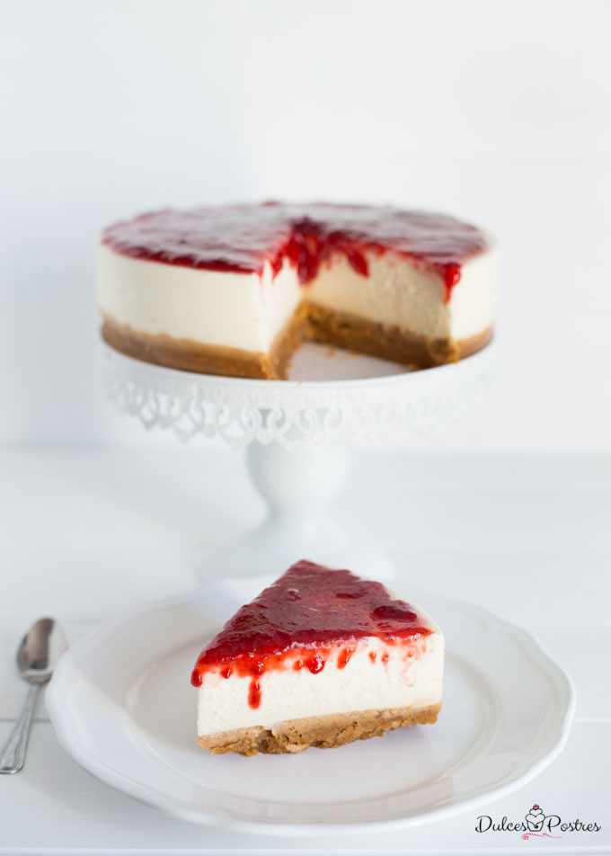

Tarta de queso
Descripción
He de deciros que yo siento cierta debilidad por esta tarta de queso, creo que debería deciros que es mi tarta favorita, siento cierta atracción por todo tipo de tartas, pasteles, bizcochos, o cupcakes que lleven como ingrediente principal el queso, me encanta!!! Creo que es algo afín a muchos de vosotros y gracias a ello esta tarta de queso es la receta más visitada del blog.
Esta receta que os traigo hoy es una de nuestras recetas de postres favoritas, la que hemos hecho siempre, solo que esta vez la hemos renovado para aclarar dudas y mejorarla de manera sustancial, porque os lo merecéis y sé que os va a encantar. Solo con introducir y cambiar algún ingrediente para satisfacer a los más exigentes paladares y como no para hacerla mucho mas especial elaboraremos nuestra propia mermelada para que sea una tarta 100% irresistible!!!
Os voy a contar un poco de donde viene esta receta, las primeras referencias escritas que se tienen de una tarta de queso son de la Antigua Grecia, eran un rico aporte proteico a base de queso y realmente el sabor de la receta original difiere mucho de las que hacemos hoy en día, la receta original se extendió por Europa, los inmigrantes que viajaron a América la trasladaron allí y de hay derivaron las recetas de hoy en día.
- 2 paquetes de galletas
- 100 gramos de azúcar
- 400 g de nata líquida
- 500 g de queso
- 1. Trocearemos las galletas en pequeñas porciones para triturar en el robot de cocina con la trituradora eléctrica, hasta hacerlas polvo , una vez picadas mezclaremos con la mantequilla y los cacahuetes de miel previamente troceados. Formaremos una masa que nos sirva como base para la tarta de queso fría
- 2. Si queremos sacar la tarta por completo del molde, colocaremos un papel del hornear en la base del mismo tamaño que la base recortaremos con unas tijeras. Colocaremos la masa creada con las galletas y la mantequilla en la base del molde, cubriendo toda la base de forma homogénea, nos ayudaremos de una espátula de silicona o con la palma de la mano y los dedos iremos cubriendo toda la base del molde. Yo emplee otra base mas pequeña para aplastar bien la base y que quedara del todo nivelada.
- 3. Dejaremos enfriar en la nevera hasta que este lo suficientemente resistente como para soportar el peso de nuestra tarta de queso. Unos 15/20 minutos serán suficientes para conseguir una base estable y firme
10/07/2020
Juanita Pérez
Ahora que estamos en cuarentena tengo tiempo para hacer recetas como estas!
12/07/2020
Anónimo